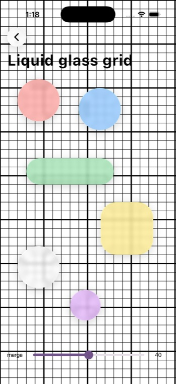

LiquidGlass
Плита «жидкого стекла» iOS 26: преломление на ободке, размытие, дисперсия, блик — одним шейдером.
Как выглядит



Что это
Базовый строительный блок кита. Фон под плитой преломляется на ободке выпуклой «подушки» (в середине спокойно), слегка размывается, раскладывается по каналам, подкрашивается и подсвечивается бликом. Всё — один фрагментный шейдер и один проход по фону.
Когда использовать
Для нескольких заметных элементов: кнопки баров, пилюля, плавающий тулбар, лист. Для строк списка — GlassSurface(liquid: false) или flat: true. Группы плит — в LiquidGlassGroup (см. гайд «Стекло и производительность»).
Минимальный пример
LiquidGlass(
width: 160,
height: 56,
interactive: true, // пружина, подсветка под пальцем, «резинка»
child: const Center(child: Text('Glass')),
)Варианты
LiquidGlass(clear: true, width: 120, height: 120, cornerRadius: 36, child: const SizedBox()); // Glass.clear
LiquidGlass(tint: const Color(0x660A84FF), width: 140, height: 52, child: const SizedBox()); // тонированное
LiquidGlass(flat: true, interactive: true, width: 140, height: 52, child: const SizedBox()); // без шейдера, тот же откликopacity — прозрачность всей плиты вместо Opacity (который сломал бы шейдер); presence (0..1) — рост из точки / схлопывание, см. LiquidGlassPresence.
Параметры (из dartdoc)
LiquidGlass
| Параметр | Тип | По умолчанию | Описание |
|---|---|---|---|
child | Widget? | ||
cornerRadius | double? | null: fully round ends (stadium / circle). | |
bottomCornerRadius | double? | A different radius for the two bottom corners (the top ones keep cornerRadius); null: the same. A sheet is round at the bottom like the screen and has its own radius at the top. | |
width | double? | ||
height | double? | ||
shadow | bool | true | |
tint | Color? | ||
bezel | double? | ||
refraction | double? | ||
clear | bool | false | SwiftUI's Glass.clear: almost no blur (~1.6 pt), no desaturation, a flat +0.08 luminance lift and no shadow, same rim lens. Same in light and dark. |
presence | double | 1 | 0..1: the plate grows from / shrinks into a point (SwiftUI's glassEffectTransition(.matchedGeometry/.materialize) look: inside a LiquidGlassGroup with spacing the vanishing plate stays melted to its neighbour while it shrinks). Normally driven by… |
presenceOrigin | Offset | Offset.zero | Pivot of the presence scale, as an offset (logical px) from the plate's center. Point it at the neighbour the plate should melt into (e.g. |
interactive | bool | false | SwiftUI's .interactive() / buttonStyle(.glass) press response, fitted to frames of the native effect (60 fps recording of a simulator touch): on touch-down the plate springs to 1.05x (peak 1.052 after ~0.18 s, rests at ~1.047) and the whole plate gets a… |
highQuality | bool | false | Adds an engine blur prefilter (SwiftUiThemeData.liquidPrefilter) to a plate that is NOT inside a LiquidGlassGroup. Thin features under the glass (1 px lines, small text) then blur as smoothly as in native glass instead of showing sampling noise, but it… |
blur | double? | Overrides the blur sigma (pt) of the plate: 1.6 for clear, SwiftUiThemeData.liquidBlur otherwise. | |
toneLift | double? | Overrides the brightness lift of a clear plate (0.078 by default; on a light backdrop that lifts a light gray to white). | |
flat | bool | false | A FLAT plate with the same interaction as the glass: no shader (works everywhere), one solid colour without rim or shadow, but the same press response with interactive: the spring grow, the highlight, the stretch under a drag. This is the look of `liquid:… |
flatFade | Duration? | How long the glass takes to melt back into the flat plate when flat turns true. Null (default): at once, which is what the app switcher snapshot needs and what native glass does (a visible flash). | |
glassFade | Duration | const Duration(milliseconds: 260) | How long the glass takes to fade in over the flat plate. |
opacity | double | 1 | 0..1: how transparent the whole plate is (glass, shadow, flat fill and child together). Use this instead of an Opacity widget: that one renders its subtree into an offscreen layer, where the glass has no backdrop to refract and the plate turns into a flat… |
glowSigma | double? | Gaussian sigma (pt) of the press highlight around the finger. Null: fitted to the plate's size (a big plate lights up as a whole, a small one around the finger). | |
glowStrength | double | 1 | Multiplier of the press highlight's brightness (1: as measured on native glass). |
stretch | double | 1 | Multiplier of the drag response (how far the plate stretches toward the finger and narrows across). 1: as measured on native glass buttons, which a big plate such as a dialog barely shows; raise it there. |
cornerScaleTR | double | 1 | Scales the radius of the top-right / bottom-right corner relative to the left ones (1: all corners alike). A morphing plate that is not symmetric (a native menu pulled out of a toolbar button) needs corners of its own. |
cornerScaleBR | double | 1 | |
cornerScaleTL | double | 1 | |
cornerScaleBL | double | 1 |
Импорт: import 'package:swiftuikit/swiftuikit.dart';